Purdue SigBots · BLRS2 · Mechanics lead
Competition Robot Design
Two seasons of VEX U robots at Purdue, where the rules allow almost anything you can machine. Custom aluminium plate chassis, parametric scoring mechanisms, and the robots that carried the 2026 World Excellence Award.
- Team
- Purdue SigBots: BLRS2
- Role
- Mechanics lead ·
Vice President, ACM - Seasons
- High Stakes 2024–25
Push Back 2025–26 - CAD
- Autodesk Inventor
- Manufacturing
- Waterjet · 5-axis ·
laser · FDM - Materials
- 6061 plate · polycarbonate ·
Delrin · PETG - Top result
- VEX U World
Excellence Award 2026 - Status
- Active
VEX U World Excellence Award, 2026
Excellence is the top overall award in VEX Robotics and it is not won on a single match or a single robot. It is assessed on the whole season: robot performance, engineering design process, the quality of the documentation, the interviews, the strategy, and how the programme represents itself.
I was mechanics lead and Vice President through this season. My work sat at the front and back of the process: taking early concepts and turning them into buildable designs, then keeping the loop of test, diagnose and revise running long enough that the design actually improved rather than just changed. The award came from the full team across design, build, programming, driving, notebooking and interviews.
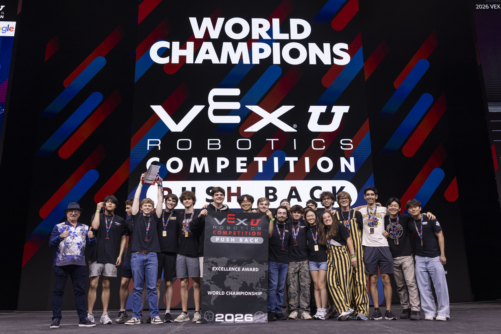
Push Back: 2025 to 2026
The Worlds robot
The robot we ran at the World Championship uses a conventional S-shaped ball path, refined hard for reliability rather than novelty. We built two of them so both sides of the VEX U field could run the same strategy with the same handling.
Ten motors on the drive gave it real speed and pushing power. The mechanism I care about most is the ball park, which uses the preload ball to push off the floor and control the robot’s position early in the match. Colour sorting was the other one that earned its complexity: being able to reject the wrong colour keeps cycles clean when the field is crowded, and it removes a whole category of driver error.
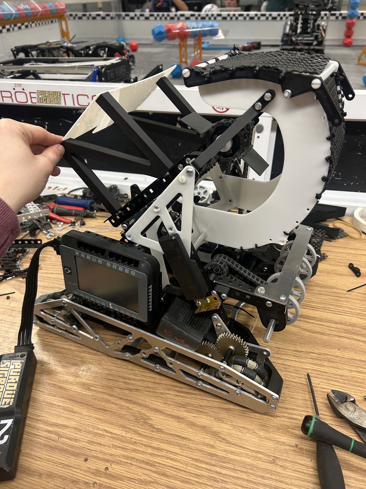
Slingshot
Earlier in the season I designed a slingshot launcher built around controlled, high-power shots. Balls load from the front and fall back into a three-ball magazine: capacity is limited deliberately, because the strategy was to control goals rather than overfill them. The launcher runs on two linear rods with linear ball bearings on a motor-driven pusher.
The whole assembly is fully parametric, so barrel length, launch angle and height are variables and every dependent component updates when one changes. That is what made iteration fast enough to be worth doing during a season.
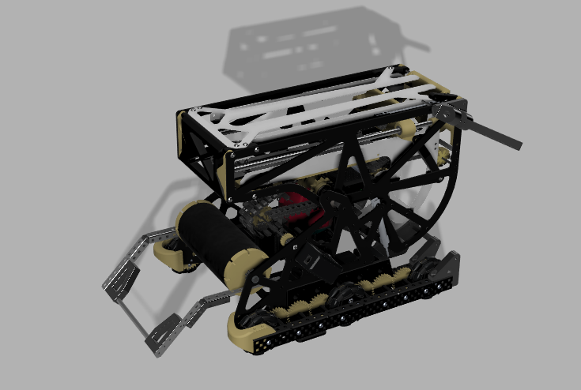
The built robot matches the CAD exactly, on six fully custom aluminium plates that I machined and anodised. The lift sits at about 60° for the long goal and drops flat to drive underneath it and score the middle goal, so one mechanism covers both heights. A useful side effect: the launcher is powerful enough that it regularly knocks opponents’ balls out of a contested goal on the way in.
We also carried over the wing, a mechanism that reaches into a goal and clears opposing balls. Our strategy was not to fill goals with our colour; it was to score three and then spend the match descoring. A goal with a low ball count is one we can control and one the opponent cannot easily flip. The robot debuted at Illini Corn Clash 2 and won the tournament.
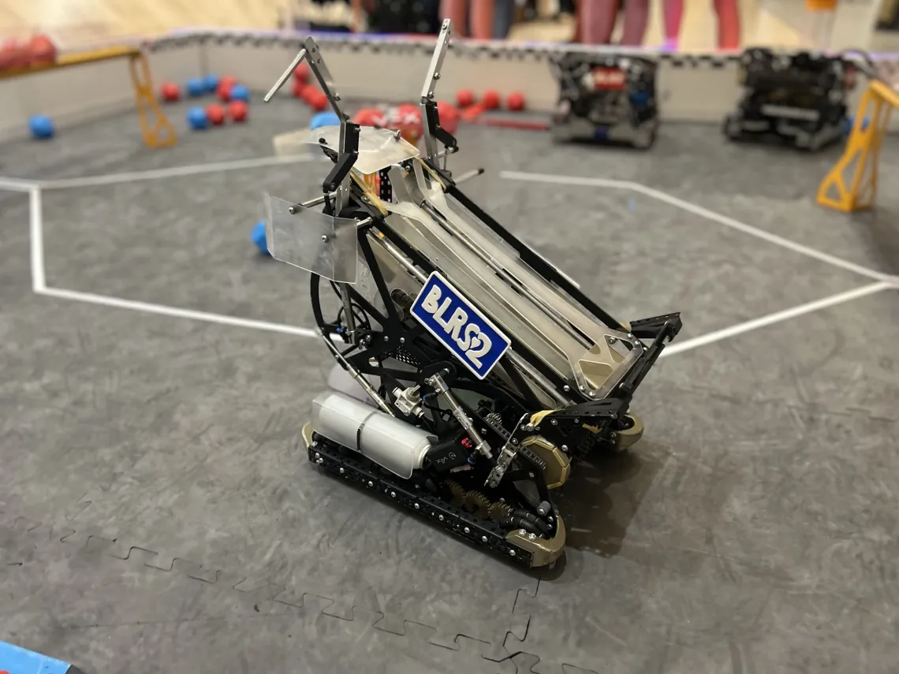
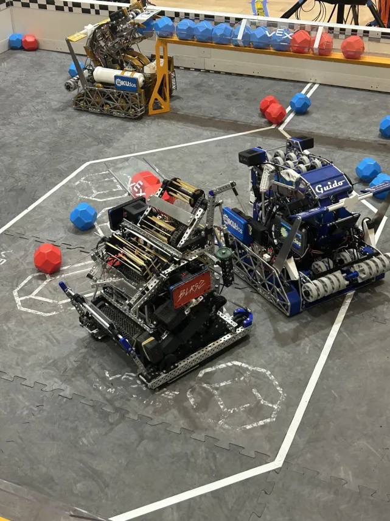
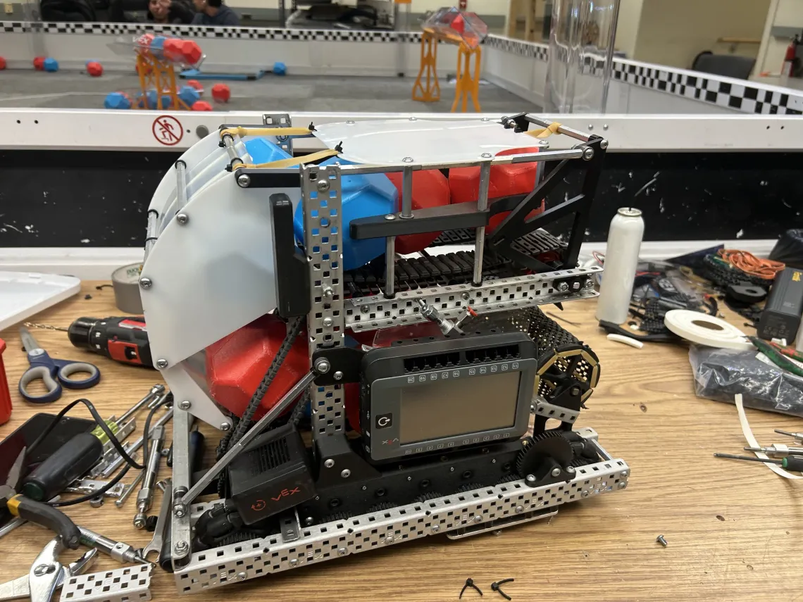
Failure Push Back · C-intake
A mechanism that worked in testing and failed as a system
The C-intake performed well in isolation. Intake from the front, score from the front, tall enough for the middle goal, low enough to slide under the long one. On the field it was worse than the numbers suggested: front-to-front routing made the robot awkward to drive in traffic and tightened every packaging decision downstream of it.
We scrapped it. The mechanism was fine; the layout it forced was not.
Fix
Judge a mechanism by driver time on a real field, not by cycle count on a bench. We now put every serious concept in front of a driver before it gets committed to a chassis.
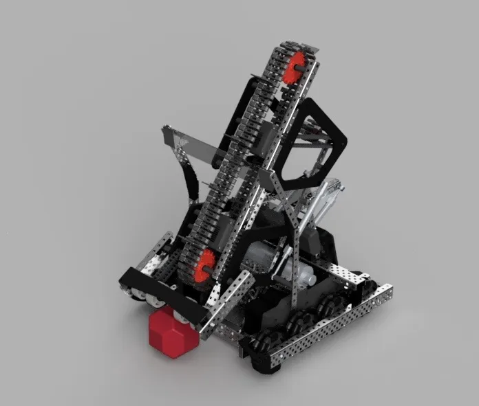
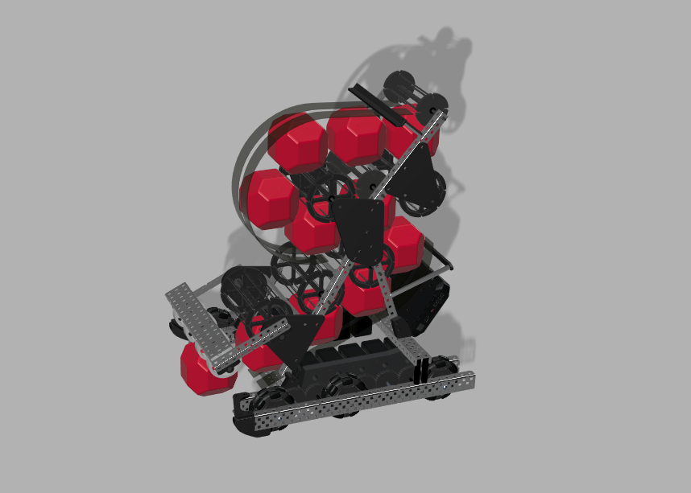
Two concepts came out of the game manual release. We built the S-path for its capacity and it underperformed: the longer path added friction and slowed ball flow, so we could hold more but cycle less. That trade is obvious in hindsight and was not obvious on paper, which is a reasonable summary of pre-season design.
High Stakes: 2024 to 2025
Custom to the frame
This robot is built almost entirely without C-channel or stock VEX structure. Fully custom machined side plates tie into the chassis to carry the robot’s weight through the lift without the frame racking.
That rigidity is what let us run large linear slides up the side of the tower. The lift is pulley driven for force transmission at low mass and small packaged volume, and the slide assembly is integrated into the chassis so the starting footprint stays small enough to swap configurations. Load paths were laid out deliberately to keep deflection out of the extension.
Our endgame was the partner hang: hooking mechanically onto an alliance robot to stabilise and elevate, while placing a ring on the highest post at the same time.
Reading the rules as a design input
In February a rule update let teams switch between 24″ and 15″ configurations at match start, provided both states were achievable. We built a zip system that uses a string contacting the starting zone, so the robot body begins closer to the goal and wins the early rush.
I also designed a folding grabber that retracts a goal eight inches and at an angle when it fires. The angle is the point: a straight pull is easy to contest, an angled pull moves the goal somewhere the opponent is not.
MK.3
MK.3 leaned all the way into what VEX U allows. Polycarbonate in the side plates and intake, machined aluminium base plates to keep the drivetrain rigid, and the first version of the high hang mechanism we refined for the next robot.
It also carried equipment that would be illegal in the high school programme. We ran an ADNS-2620 optical sensor, effectively a mouse sensor, to track field position continuously, and moved to lightweight Robart air tanks and shorter SMC pistons, all while staying inside the robot budget.
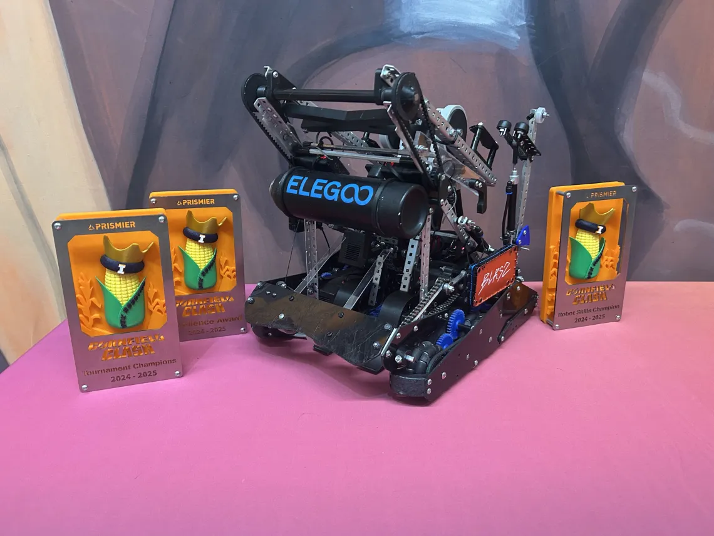
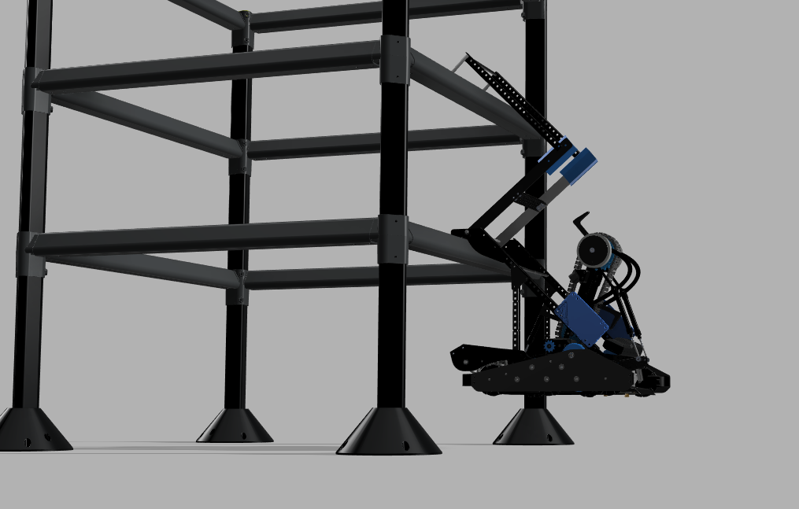
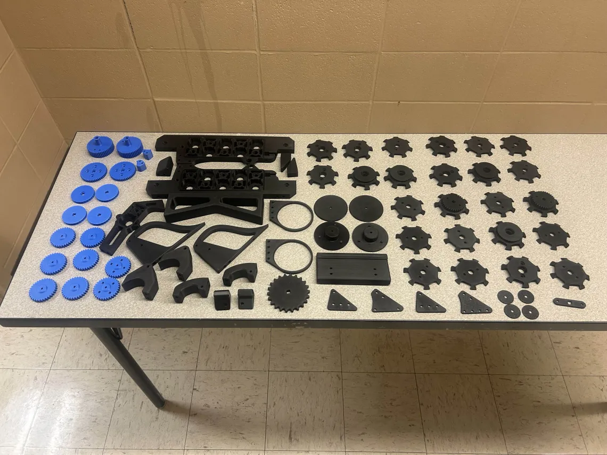
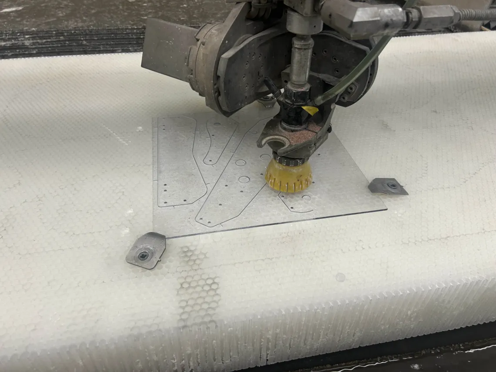
The first two
MK.1 and MK.2 were my first college robots and they were mostly about learning what the shop could do. VEX U opens up manufacturing that simply is not available in the high school programme, and a lot of the first season was finding out which of my instincts from four years of VRC still applied and which were now the slow way round.
MK.1 never competed. MK.2 did, and won the VEX U NUKE tournament.
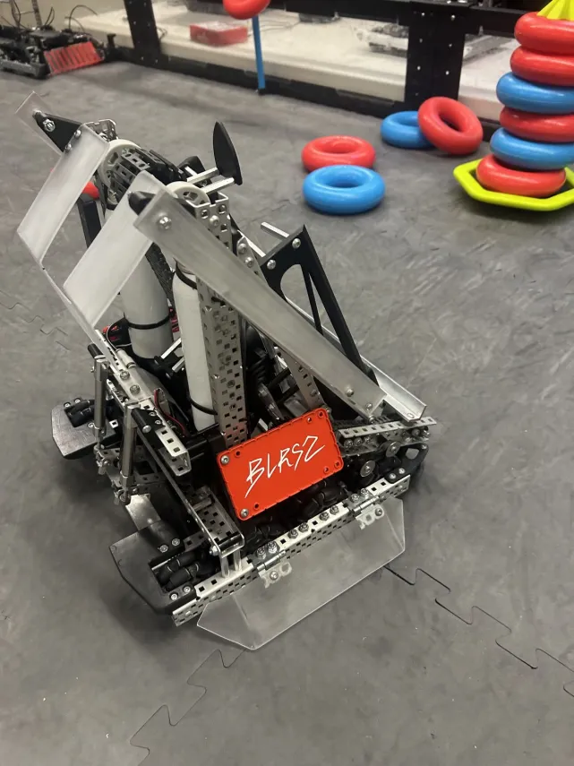
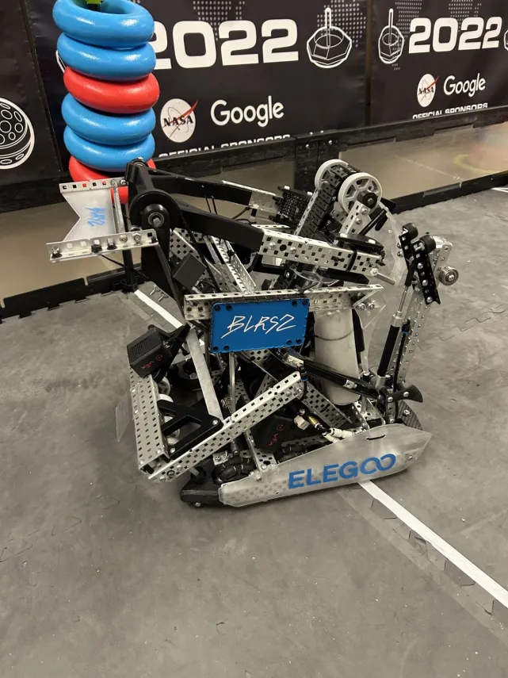
How the mechanical side runs
Some of this is process rather than parts, and it is the part I think transfers furthest outside of robotics.
- Parametric first. Anything we expect to iterate gets built on driving dimensions, so a change to launch angle updates the barrel, the mounts and the packaging rather than starting an argument.
- Manufacture-aware geometry. A feature that cannot be reached with a tool we own is not a design, it is a wish. I keep workholding in mind while modelling, which is a habit the golf club work beat into me.
- Driver time is data. Cycle counts on a bench mislead. A mechanism earns its place after a driver has fought traffic with it.
- Write it down. The notebook is not overhead. Half the Excellence case is being able to show why each decision was made, and the only way to have that is to record it as it happens.